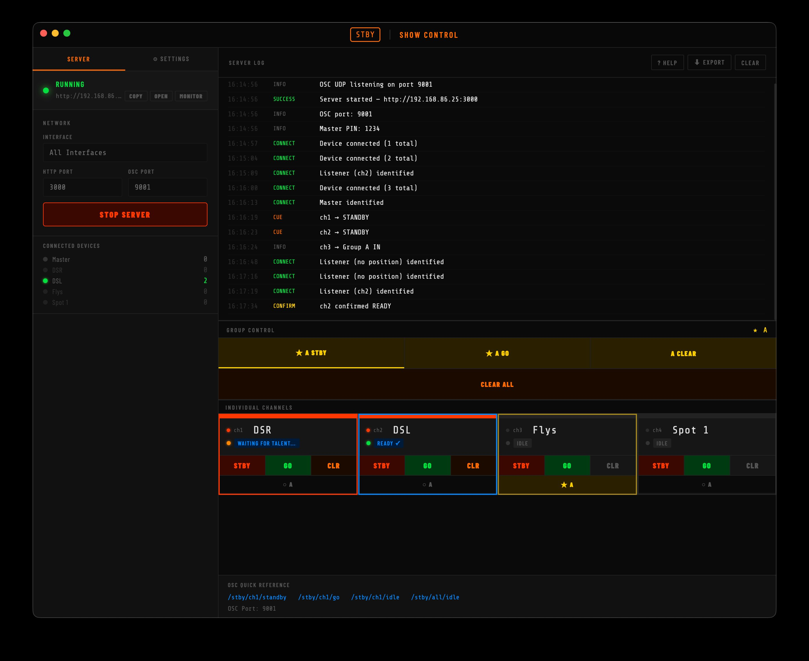
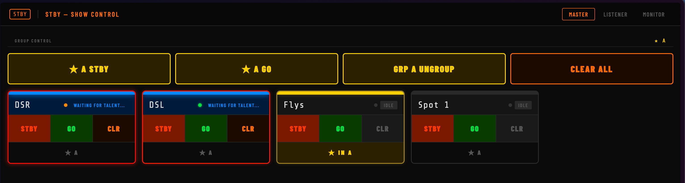
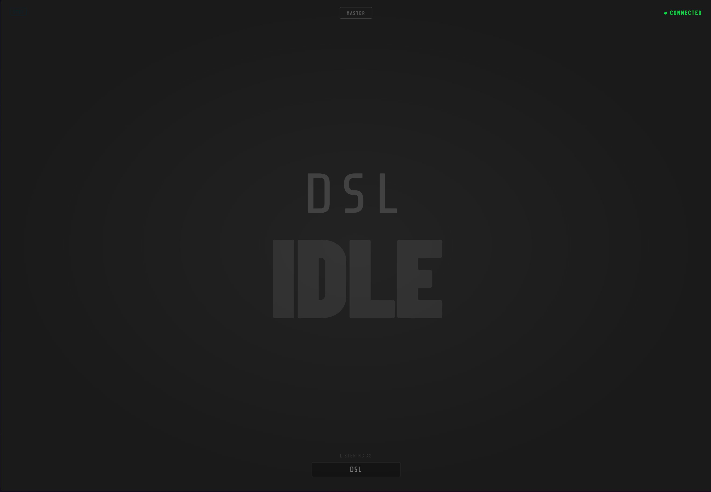
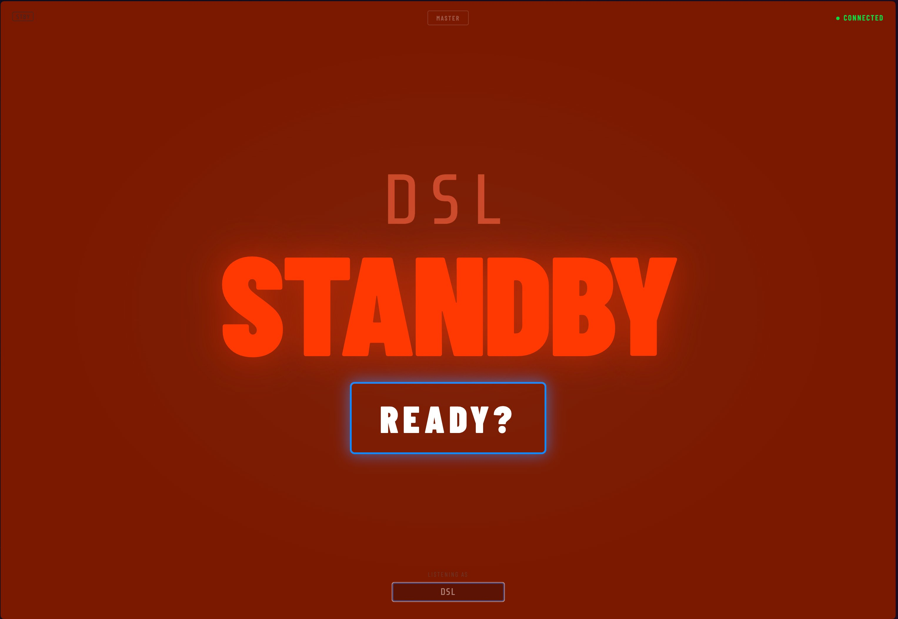
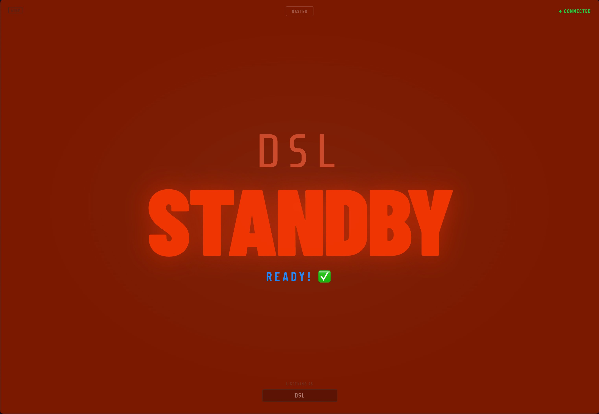
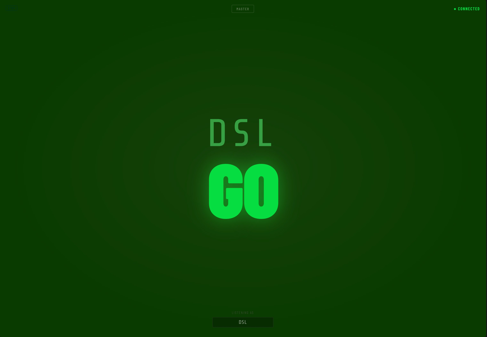
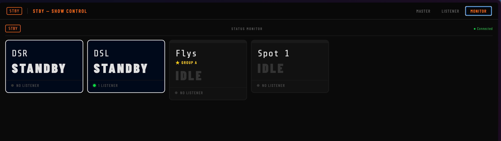
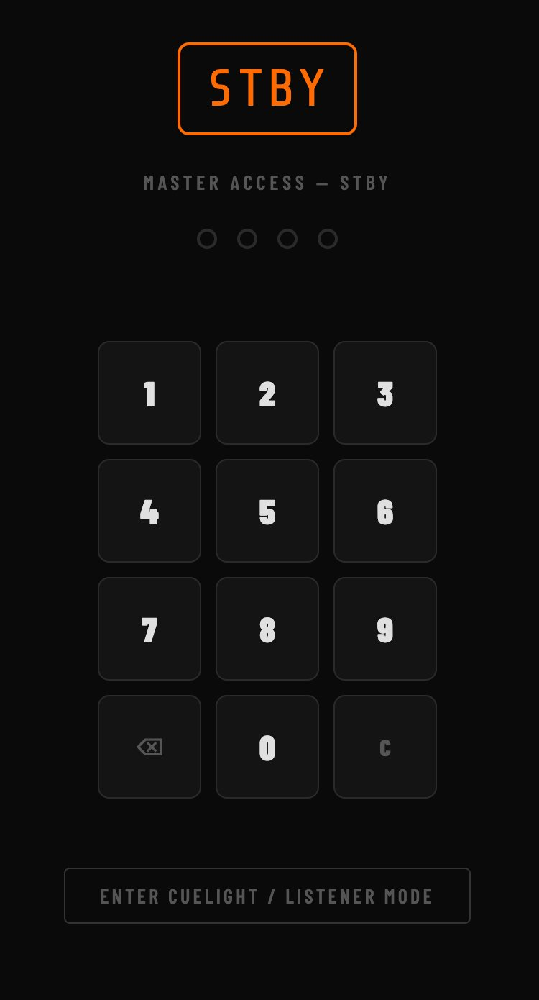

What is STBY?
STBY (short for Standby) is a professional cue light system for live theatre and events. It replaces expensive dedicated hardware with software that runs on devices your venue already owns — Mac laptops, iPads, iPhones, and Android phones.
A cue light system is how a Stage Manager or DSM communicates with performers waiting offstage: a STANDBY signal means "get ready", and a GO signal means "go now". STBY handles all of this over your venue's Wi-Fi network.
Who Does What?
STBY has three types of users. Understanding which role each person plays is the key to getting set up quickly.
Up and Running in 5 Minutes
This is the fastest path from zero to firing your first cue light. Every device needs to be on the same Wi-Fi network.
-
1
Open the STBY app on your Mac Double-click the STBY app. The main window opens with a Server and Settings tab on the left, and a log panel on the right.
-
2
Click "Start Server" The status dot turns green and a URL appears — something like
http://192.168.1.50:3000. This is the address every other device will use. -
3
Share the URL with your team Use the Copy button to copy the address, then send it by message, AirDrop, or write it on a whiteboard.
-
4
Performers open the URL in their browser Paste the URL into Safari or Chrome. The Listener screen appears automatically. They choose their position from the selector at the bottom and they're live.
-
5
DSM fires cues from the Master view In the STBY Mac app (or in a browser at the same URL after entering the PIN), tap STBY to warn a performer, then GO to send them.
The STBY Server App
The server app runs on your Mac and is the brain of the whole system. Everything else — iPads, phones, QLab — talks to it.

Settings Tab
Click the ⚙ Settings tab on the left to configure the system before starting the server.
-
①
Channels Add, remove, and rename your cue positions. Default names are DSR, DSL, Flys, and Spot 1. Changes take effect immediately — no restart needed.
-
②
PIN Set the 4-digit PIN that protects the Master view. Anyone without the PIN can still connect as a Listener — they just can't fire cues.
-
③
Groups Enable 1, 2, or 3 channel groups (A, B, C) to fire multiple cue positions simultaneously. See the Groups section for full details.
Managing Channels
Each channel is one cue position — a place offstage where a performer or technician is waiting. You can have as many channels as you need.
Channels are named in the Settings tab. The name you give a channel is what performers see when they open their Listener screen and choose their position.
Channel States
Every channel is always in one of four states, shown clearly on each card in the Master view:

Groups
Groups let you fire multiple channels simultaneously with a single button press. A DSM running a complex musical with overlapping cues can set up Group A for the DSM wing, Group B for the director's cue positions, and fire them independently.
You can have up to three groups: ★ Group A (yellow), ● Group B (cyan), and ■ Group C (purple). Enable the groups you need in Settings before starting the server.
The Group Toolbar
The Group Control toolbar sits above the channel cards in both the server app and the Master browser view. It gives you STBY, GO, and Clear buttons for each active group.
Assigning Channels to Groups
Each channel card has a group badge at the bottom (★ A, ● B, ■ C). Tap it to assign the channel to that group — it highlights in the group colour. A channel can only be in one group at a time; assigning it to a new group removes it from the old one automatically.
Smart Clear
First tap — if any channels in the group are active (STANDBY or GO), it clears them back to Idle but keeps them in the group. "GO Reset."
Second tap — if all channels are already Idle, it removes them from the group. "Ungroup."
This means you can safely hit Clear mid-show without losing your group setup.
OSC & QLab Integration
STBY can receive OSC messages from QLab or any OSC-capable system, letting you fire cue lights automatically as part of your cue stack.
OSC messages are received on UDP port 9001 by default (changeable in Settings). The OSC addresses and port are always shown in the footer of the server app window.
OSC Address Reference
| OSC Address | Action |
|---|---|
| /stby/ch1/standby | Send STANDBY to channel 1 (DSR) |
| /stby/ch1/go | Send GO to channel 1 (DSR) |
| /stby/ch1/idle | Clear channel 1 to Idle |
| /stby/ch2/standby | Send STANDBY to channel 2 (DSL) |
| /stby/ch2/go | Send GO to channel 2 (DSL) |
| /stby/all/idle | Clear ALL channels to Idle |
Channel numbers follow the order in the channel list — ch1 is the first channel, ch2 the second, and so on.
Setting Up in QLab
- 1Open QLab Workspace Settings → NetworkClick the gear icon in your QLab workspace, then select the Network tab.
- 2Add a new network patchSet the destination to your Mac's IP address (shown in the STBY server app) and port 9001. Type: UDP.
- 3Create a Network cueAdd a Network cue type, choose your STBY patch, and enter the OSC address — e.g.
/stby/ch1/standby. - 4Test with the server runningFire the QLab cue — it should appear in the STBY server log immediately.
Connecting Devices
Any device with a modern web browser can connect to STBY — iPad, iPhone, Android phone, laptop. All devices must be on the same Wi-Fi network as the Mac running the server.
- 1Open Safari (or any browser) on the deviceSafari is recommended on iPhone and iPad. Chrome works well on Android and desktop.
- 2Type in the server URLEnter the address shown in the STBY app — e.g.
http://192.168.1.50:3000. Don't forget thehttp://or the:3000. - 3The Listener screen appearsBy default, every device that opens the URL goes straight to Listener mode. Select your position from the selector at the bottom. To access Master, tap the MASTER button at the top and enter the PIN.
The Master View
The Master view is where the DSM or cue caller operates. It shows all channel cards and group controls. Access it in the STBY server app directly, or in a browser after entering the PIN.
The Listener View
This is what the performer or offstage technician sees. The entire screen is their cue light — big, bright, and impossible to miss in a dark wing. It's the default view when any device opens the STBY URL.




The Monitor View
The Monitor view is a read-only status board showing all channels at a glance. No controls — just a clear picture of who is in what state. Perfect for a second screen at the prompt desk, or for a QLab operator who needs situational awareness without firing cues.

How to Open
Click the Monitor button in the STBY server app — it opens in your default browser automatically. Or navigate directly to: http://[server-ip]:3000?page=monitor
Mobile App — Finding the Server
The STBY mobile app (iOS & Android) includes automatic server discovery — it scans your local network and finds the STBY server without you needing to type an IP address.
If automatic discovery finds a server, tap it to connect. If discovery doesn't work on your venue's network, use the manual IP entry at the bottom of the screen — type the address shown in the STBY server app.
The app remembers the last server it connected to, so from the second night of a run you can connect with a single tap.
Mobile App — PIN & Role
After connecting, the app asks which role you're taking — Listener (no PIN, goes straight to the fullscreen display) or Master (requires the PIN). The app remembers your choice between sessions.

The Full Standby Flow
Here's exactly what happens, step by step, when a DSM calls a cue:
- 1DSM taps STANDBY on a channelThe channel card border turns red. A STANDBY message is sent to all connected listeners on that channel.
- 2Performer's screen flashes redThe listener screen alternates between red and black at a 0.95-second interval — unmissable even in a bright wing.
- 3Performer taps READY?The blue-glowing READY? button appears. The performer taps it to confirm they're in position.
- 4Master card updates to READY ✓The card header turns green. The performer's screen stops flashing and shows "Ready! ✅" on a steady red background.
- 5DSM taps GOThe performer's screen turns solid green. They go. The channel stays green until the DSM taps CLR.
PIN & Access Control
The PIN protects the Master view. Only people who know the PIN can control cue lights. Listeners do not need the PIN — they go straight to their screen.
Set the PIN in the ⚙ Settings tab of the server app. The PIN is automatically sent to any Master device that connects — you don't configure it on each device separately.
Troubleshooting
Device can't connect
Check all devices are on the same Wi-Fi network. The Mac and every connecting device must be on the same network — same SSID, not split between 2.4GHz and 5GHz.
Check the full URL. Type the address including http:// and the :3000 port — e.g. http://192.168.1.50:3000. Leaving either out will fail.
Check the Mac's firewall. Go to System Settings → Network → Firewall. If it's on, either disable it or add STBY to the allowed apps list.
Listener screen isn't responding to cues
Check the card header colour. Grey means no listener is connected on that channel — check the performer's device and position selection.
Reload the page. Pull down to refresh in the browser. STBY reconnects automatically within a few seconds.
Check the server log. The log shows every connection event. Look for the listener connecting and cue messages being received.
OSC messages from QLab not working
Check the IP and port. QLab needs to send to your Mac's IP (shown in the STBY app) on port 9001, UDP not TCP.
Check the OSC address format. Must match exactly — /stby/ch1/standby — lowercase, correct channel number.
Check the OSC port in STBY. The port is shown in the footer of the server window. It defaults to 9001 but can be changed in Settings.
Screen keeps going black (auto-lock)
The browser version can't prevent auto-lock. On iPhone/iPad go to Settings → Display & Brightness → Auto-Lock and set it to Never for the show. The STBY mobile app handles this automatically.
Mac says "unverified developer" on first open
Right-click (or Control-click) the STBY app and choose Open from the menu. Click Open in the dialog. You only need to do this once.